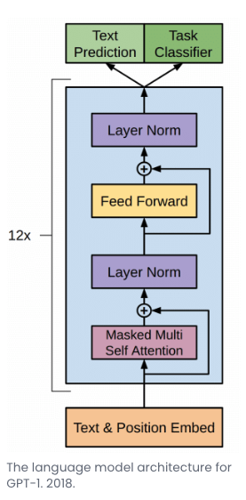
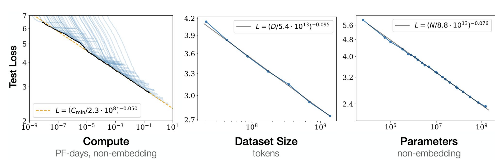
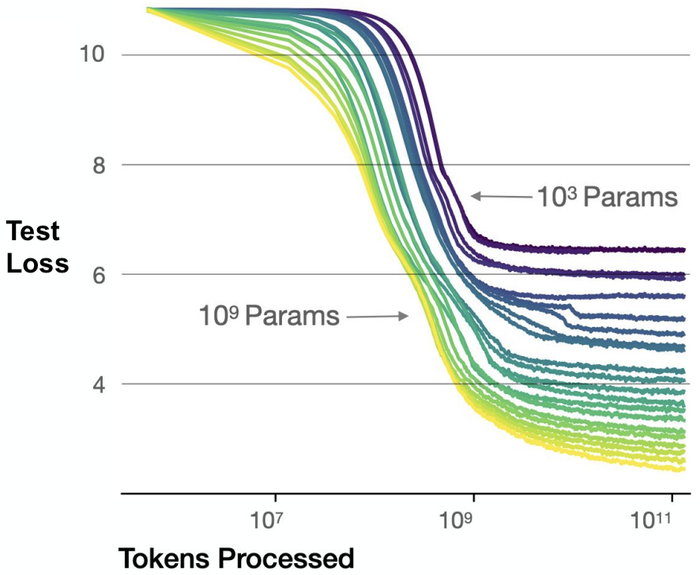
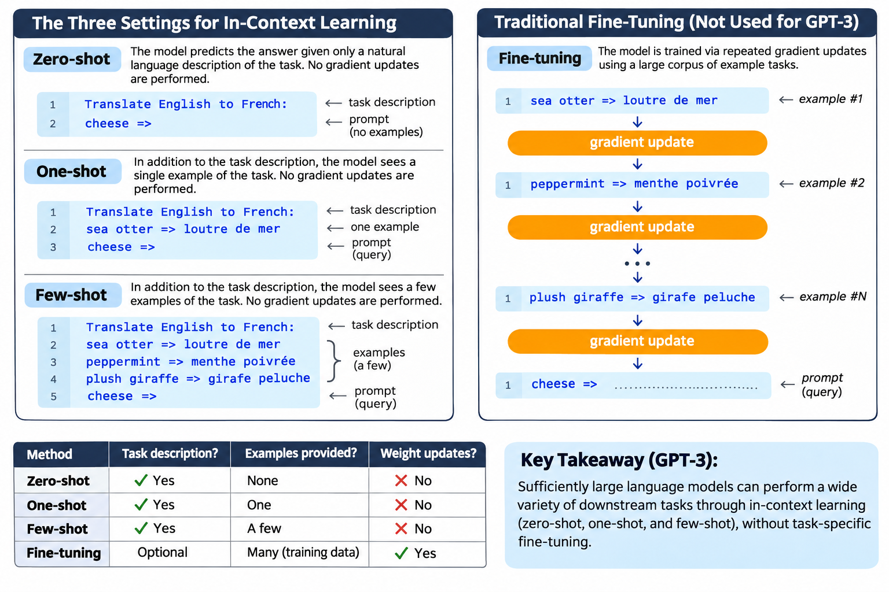
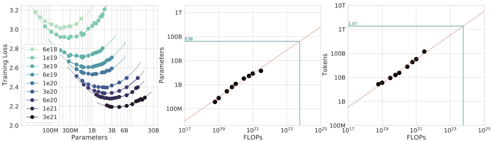
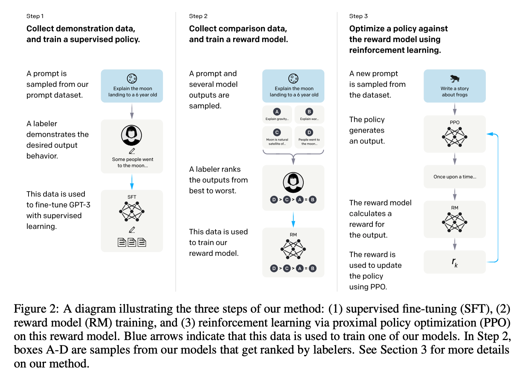

Post-Training, Chatbots and Agents
Everything we have covered in the course so far is generally referred to as Pre-Training. In fact, the P in GPT stands for Pre-training.
Despite the fact that the pre-training phase is quite intensive, it does not necessarily produce a model that is useful for real-world applications. The model needs to be adapted to specific tasks or objectives, which is where Post-Training comes in.
| Pillar | Foundational publication |
|---|---|
| Architecture | Attention Is All You Need |
| Pre-training | GPT-1, GPT-2 |
| Scaling | Scaling Laws, GPT-3 |
| Post-training | InstructGPT, ChatGPT |
There are a lot of terms thrown around in the context of large language models (LLMs) like ChatGPT. In this tutorial, we will try to clarify some of these terms and concepts.
Both GPT-1 and GPT-2 were accompanied by research papers published by OpenAI.
There is a particularly interesting historical arc here:
- GPT-1: Pre-train a model and fine-tune it for each task.
- GPT-2: Pre-train a sufficiently large model and attempt tasks without fine-tuning.
- GPT-3: Teach the model new tasks through examples in the prompt.
- InstructGPT: Fine-tune the model to follow instructions generally, rather than for one specific task.
- ChatGPT: Adapt the model into a general-purpose conversational assistant.
In some ways, InstructGPT represents a return to the pre-training and fine-tuning paradigm of GPT-1, but with a fundamentally different objective for fine-tuning.
0. Pre-Attention History
1. Transformer (2017)

Attention Is All You Need Vaswani et al. — June 2017, published at NeurIPS 2017. Authors from Google Brain and Google Research.
Key contributions:
Introduced the transformer architecture.
Replaced recurrence and convolution with attention mechanisms.
Introduced multi-head attention and positional encodings.
Used an encoder-decoder architecture for machine translation.
Enabled more parallelizable training than recurrent neural networks.
2. GPT-1 (2018)

Improving Language Understanding by Generative Pre-Training Radford, Narasimhan, Salimans, and Sutskever — June 2018. Authors from OpenAI.
Key contributions:
Introduced the Generative Pre-trained Transformer (GPT).
Used a decoder-only transformer with 117 million parameters, trained on the BooksCorpus dataset (7,000 unpublished books). Layers = 12, Hidden size = 768, Attention heads = 12.
Combined self-supervised pre-training with task-specific supervised fine-tuning.
Demonstrated the effectiveness of transfer learning for natural language processing.
3. GPT-2 (2019)
Language Models are Unsupervised Multitask Learners Radford et al. — February 2019. Authors from OpenAI.
Key contributions:
Scaled GPT to 1.5 billion parameters (12 layers, 48 attention heads).
Introduced the WebText training dataset.
Demonstrated zero-shot learning across multiple NLP tasks.
Zero-shot learning refers to the ability of a model to perform a task without having seen any examples of that task during training. In the context of GPT-2, this means that the model can generate text or answer questions about topics it has never been explicitly trained on, simply by leveraging its understanding of language and context learned during pre-training.
- Showed that language models could perform certain downstream tasks without task-specific fine-tuning.
4. Scaling Laws (2020)
Scaling Laws for Neural Language Models, Kaplan et al. — January 2020.
Key contributions:
Demonstrated that language model performance improves predictably with scale.
Showed that architectural details such as depth and width have relatively little impact within a broad range, compared to overall scale.
Investigated optimal allocation of computational resources during training.
Provided a scientific foundation for training increasingly large language models
Established empirical power-law relationships between language modeling loss and three fundamental quantities:
Model size (number of parameters).
Training dataset size (number of tokens).
Computational budget (FLOPs).

In the Kaplan et al. (2020) paper, Scaling Laws for Neural Language Models, the plots use three main quantities:
| Symbol | Meaning |
|---|---|
| \(N\) | Number of non-embedding model parameters |
| \(D\) | Dataset size in tokens |
| \(C\) | Compute budget in FLOPs |
| \(L\) | Cross-entropy loss |
The legends often distinguish different model sizes or compute budgets. Each curve represents training under a particular configuration.
The straight lines on log-log plots indicate a power-law relationship between loss and the quantity being scaled.
For example:
\[ L(N)=\left(\frac{N_c}{N}\right)^{\alpha_N} \]
Here, \(N_c\) is a fitted scaling constant and \(\alpha_N\) is the scaling exponent, which determines how quickly loss decreases as model size increases.
If you mean a specific figure’s legend, send me the plot and I can explain each entry precisely.
The plots above show the relationship between Test Loss and Compute (left panel), Dataset Size (center panel) and Model Size (right panel). The plots are log-log plots, which means that the axes are logarithmic. This is important because it means that the relationship between the variables is not linear, but rather follows a power law.
Generally: \[ \text{Compute} \approx 6 \times N \times D \times E \]
where (N) is parameter count, (D) is dataset size in tokens, and (E) is the number of epochs.

Compute here refers to the total number of floating point operations (FLOPs) used to train the model. Dataset Size refers to the number of tokens in the training dataset, and Model Size refers to the number of parameters in the model. The PF-days on the x-axis of the left panel refers to petaFLOP-days, which is a measure of computational cost. One petaFLOP-day is equal to 10^15 floating point operations per day.
The plot on the right shows sample efficiency curves for different model sizes. The x-axis is the number of training tokens, and the y-axis is the test loss. Each curve corresponds to a different model size, and we can see that larger models tend to perform better (lower test loss) than smaller models, given the same amount of training data.
FLOPs
Floating Point Operations (FLOPs) are a measure of computational cost. They count the number of arithmetic operations (additions, multiplications, etc.) that a model performs during training or inference. FLOPs give us a hardware-independent way to answer questions like “How expensive is it to train this model?” or “How much compute does one response cost?”
FLOPs is easy to confuse with FLOPS
- FLOPs (lowercase s) → a quantity: the total number of operations. Example: “Training this model took \(10^{23}\) FLOPs.”
- FLOPS or FLOP/s → a rate: operations per second, a property of hardware. Example: “This GPU delivers about \(10^{15}\) FLOP/s.”
Dividing the first by the second gives you time: \(\text{time} = \text{FLOPs} / \text{FLOP/s}\).
Almost all the compute in a Transformer is matrix multiplication. Multiplying an \(m \times k\) matrix by a \(k \times n\) matrix produces \(m \times n\) outputs, and each output is a dot product of length \(k\) (\(k\) multiplications and roughly \(k\) additions). So:
\[ \text{FLOPs}(\text{matmul}) \approx 2mnk \]
Example: Passing a batch of \(B\) token vectors of size \(d_{in}\) through a linear layer with weight matrix \(d_{in} \times d_{out}\) costs \(2 \cdot B \cdot d_{in} \cdot d_{out}\) FLOPs.
Notice that \(d_{in} \cdot d_{out}\) is just the number of parameters in that layer. This leads to a very useful rule of thumb.
For a model with \(N\) parameters:
- Forward pass: each parameter is used in about one multiply and one add per token, so \[\text{FLOPs}_{\text{forward}} \approx 2N \text{ per token}\]
- Backward pass: we compute gradients with respect to both the activations and the weights, which costs about twice the forward pass: \[\text{FLOPs}_{\text{backward}} \approx 4N \text{ per token}\]
Adding them together gives the most important formula in this section:
\[ \boxed{C_{\text{train}} \approx 6ND} \]
where \(C\) is the total training compute in FLOPs, \(N\) is the number of parameters, and \(D\) is the number of training tokens.
For inference, there is no backward pass, so generating each token costs roughly \(2N\) FLOPs.
Note: This approximation ignores the attention score computation (\(QK^\top\) and the weighted sum over \(V\)), which grows with context length. For typical context lengths it is a small fraction of the total, but for very long contexts it becomes significant.
How much compute does it take to train a 7-billion-parameter model on 2 trillion tokens?
\[ C \approx 6 \times (7 \times 10^9) \times (2 \times 10^{12}) = 8.4 \times 10^{22} \text{ FLOPs} \]
Converting to time: An NVIDIA H100 GPU has a peak of roughly \(10^{15}\) FLOP/s for dense BF16 math. In practice, real training runs reach only about 30–50% of peak. This fraction is called Model FLOPs Utilization (MFU), and it is lower because of memory movement, communication between GPUs, and other overhead. Assuming 40% MFU:
\[ \text{effective throughput} \approx 0.4 \times 10^{15} = 4 \times 10^{14} \text{ FLOP/s} \]
\[ \text{GPU-seconds} \approx \frac{8.4 \times 10^{22}}{4 \times 10^{14}} \approx 2.1 \times 10^{8} \text{ s} \approx 58{,}000 \text{ GPU-hours} \]
On a cluster of 1,000 GPUs, that’s about 2.5 days of training.
FLOPs are the currency of scaling laws. Given a fixed compute budget \(C\), we have to decide how to split it between a bigger model (larger \(N\)) and more data (larger \(D\)), since \(C \approx 6ND\).
5. GPT-3 (2020)
Language Models are Few-Shot Learners
Brown et al. — May 2020, subsequently published at NeurIPS 2020.
Key contributions:
Scaled GPT to 175 billion parameters, layer depth of 96, and context length of 2,048 tokens.
Demonstrated in-context learning.
Established that models could learn new tasks from examples provided in the prompt without updating model parameters.
| GPT-1 | GPT-2 | GPT-3 | |
|---|---|---|---|
| Year | 2018 | 2019 | 2020 |
| Parameters | 117M | 1.5B | 175B |
| Transformer layers | 12 | 48 | 96 |
| Context length | 512 | 1,024 | 2,048 |
| Defining contribution | Transfer learning | Zero-shot learning | Few-shot learning |
| Task adaptation | Fine-tuning | Prompting | In-context learning |

6. Chinchilla (2022)
Training Compute-Optimal Large Language Models Hoffmann et al. — March 2022, published at ICLR 2022. Authors from DeepMind.
Challenged the conclusions of Kaplan et al., 2020, which suggested that larger models should be trained on more data. Instead, Chinchilla found that smaller models trained on more data could outperform larger models trained on less data, given the same compute budget.
Compute budget refers to the total number of floating point operations (FLOPs) used to train the model. The Chinchilla paper claims that the optimal model size and dataset size should be balanced, with approximately 20 tokens per parameter.
The Chinchilla study (Hoffmann et al., 2022) found that compute-optimal training uses roughly 20 tokens per parameter:
\[ D_{\text{optimal}} \approx 20N \]
For example, Chinchilla itself was a 70B-parameter model trained on 1.4T tokens. Many modern models deliberately train on far more tokens than this. That costs extra compute during training but produces a smaller model that is cheaper to run at inference time, where costs are paid every time a user sends a request.

Chinchilla (Hoffmann et al., 2022) is a follow-up to Kaplan et al., 2020, which showed that language-model loss falls as a smooth power law in model size, data, and compute, and concluded that most of any extra compute should go to making models bigger rather than training them on more data. Chinchilla revisited this with more careful experiments (notably, adjusting the learning-rate schedule to each run’s length) and found that parameters and training tokens should grow in roughly equal proportion, about 20 tokens per parameter. To show this, they trained Chinchilla (70B parameters) with the same compute as their own 280B-parameter Gopher model, and Chinchilla outperformed it, which meant many earlier large models had been undertrained.
7. InstructGPT (2022)
Training Language Models to Follow Instructions with Human Feedback Ouyang et al. — March 2022, published at NeurIPS 2022.
Key contributions:
Fine-tuned GPT-3 to follow natural language instructions.
Established a three-stage post-training pipeline:
Supervised fine-tuning (SFT).
Reward modeling (RM).
Reinforcement learning using PPO.
Demonstrated that a 1.3-billion-parameter aligned model was preferred by human evaluators over the 175-billion-parameter GPT-3 base model.
Established the importance of aligning language models with human intent rather than simply increasing model size.

8. ChatGPT (2022)
Introducing ChatGPT OpenAI — November 30, 2022.
Key contributions:
Adapted GPT-3.5 into a general-purpose conversational assistant.
Extended the InstructGPT training methodology to multi-turn dialogue.
Incorporated human-generated conversations into supervised fine-tuning.
Used reinforcement learning from human feedback (RLHF) to improve conversational behavior.
Made large language models accessible to the general public through a conversational interface.
9. GPT-4 (2023)
10. o1 and Reasoning Models (2024)
OpenAI o1 (September 2024): a new scaling axis. Until then, “scaling” meant bigger models, more data and more training compute.
o1 showed a second axis, test-time compute: letting the model think longer before answering improves accuracy smoothly and predictably, the same way training compute does.
Its gains on competition math and coding were large. OpenAI published few details about how it was trained.
11. o3 and ARC-AGI (2025)
Test-time scaling on unfamiliar problems.
ARC-AGI is a puzzle benchmark designed to resist memorization, and earlier LLMs did very poorly on it.
o3 scored dramatically higher, but only by spending a very large amount of compute per task.
That made it both an impressive demonstration and a cautionary example of how expensive test-time scaling can get.
Keeping Track of LLMs
If you’re interested in following developments in this space, here are some great resources:
- Arena (formerly LMArena / Chatbot Arena) → Crowdsourced, blind head-to-head rankings of language models.
- Artificial Analysis → Benchmark scores, speed, and pricing across models.
- AI News → A daily newsletter summarizing AI research and discussion.
Where to Find LLMs
Want to try different LLMs? Here’s where to find them:
- Proprietary Models → OpenAI (GPT), Google (Gemini), Anthropic (Claude), etc.
- Open-Weight Models → DeepSeek, Qwen, Kimi, GLM, Gemma, gpt-oss, Mistral, etc. Try them via Together.ai or OpenRouter.
- Run Locally → Use Ollama or LM Studio.
- Base Models → Download base checkpoints (e.g., Qwen or OLMo base models) from Hugging Face and compare them with their instruct versions.